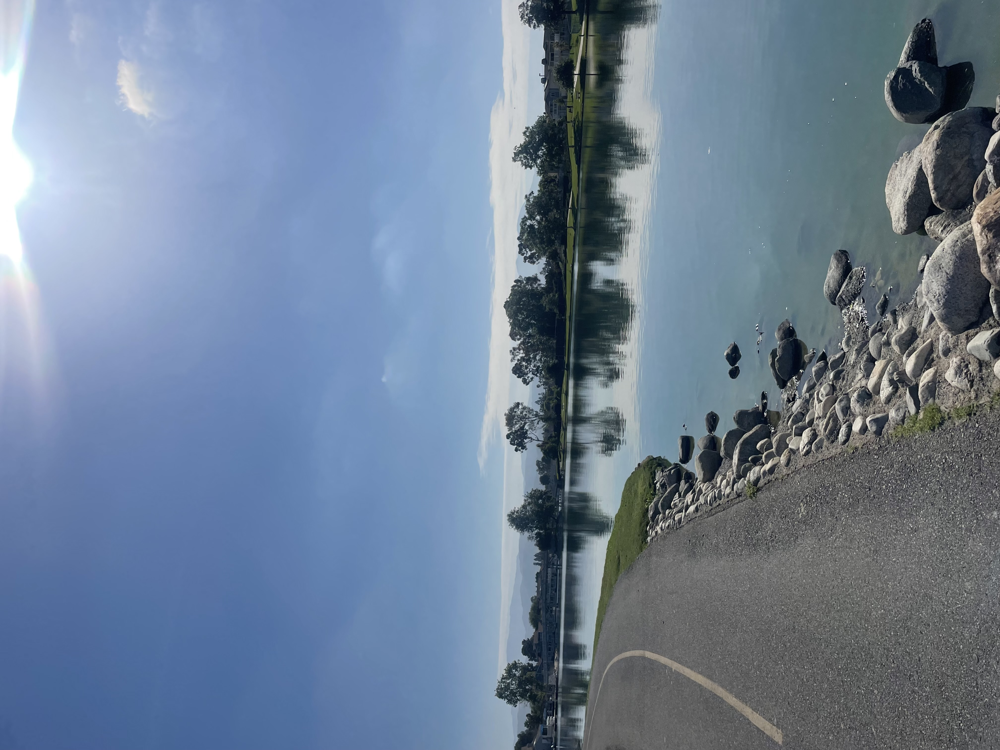

About Me!
I am a student taking the web mapping class.
I am from Irvine, CA but I go to school in New Hampshire.

What I study:
I am a Government and English major but it has been awesome to learn more about maps.
| Armita's coffee intake
|
| Week number of term |
Cups of Coffee consumed |
Average hours of sleep |
| 5 |
21 |
6 |
| 4 |
28 |
5 |
| 3 |
14 |
8 |
| 2 |
7 |
8 |
| 1 |
2 |
8 |
Places I want to travel
- Stokholm, Sweden
- Cairo, Egypt
- Zurich, Switzerland
- Hastings, United Kingdom
- Jakarta, Indonesia
My upcoming travels
- London, United Kingdom
- Madrid, Spain
- Florence, Italy
- Dublin, Ireland
- Geneva, Switzerland
This is one of my favorite poems, Wild Geese by Mary Oliver. Give it a read!